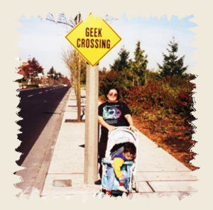
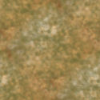

|

This picture of me with my son was taken in 1999 when we had just moved to Redmond, WA so I could take a job working as a contractor at Microsoft. Despite what you may think, that sign actually existed. It appeared on 156th Ave. NE (Microsoft Way) and stayed there for a couple of days before someone took it down. In the background, you can see the building across the street where the Visual Studio people had their office back then.
I picked five colors from that picture to create the graphics for this page. Here is my palette:
I made three tiles for the
background design using Corel PaintShop
Pro X and the colors in the palette. The
marble texture was created using a soft,
fairly small airbrush with whcih I placed
random blotches of all the colors until
I acheived a pleasant-looking patter. I
then used the Seamless Tiling command under
Effects, Image Effects to make sure that
the image would tile seamlessly. Here is
the tile:

I created a custom gradient
using the five colors in my palette and
then made a seamless tile out of it by using
the Seamless Tiling command again. Here
is that tile:
Finally, I created a tiny
tile using the lightest color just to make
sure that it would come up the same way
in the finished page.
PREVIOUS
| HOME| IRENESMITH.COM|
NEXT
Text and graphics Copyright
© 2006, Irene Smith. All rights reserved.
|